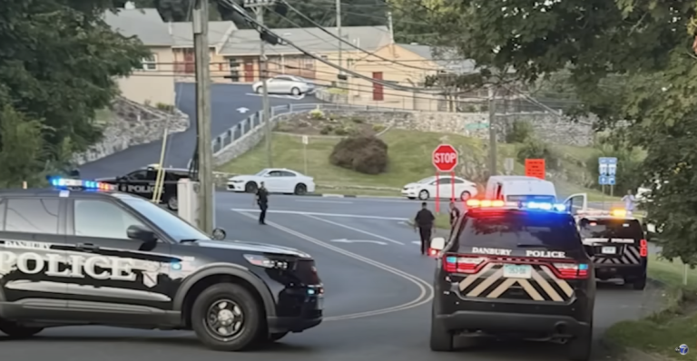
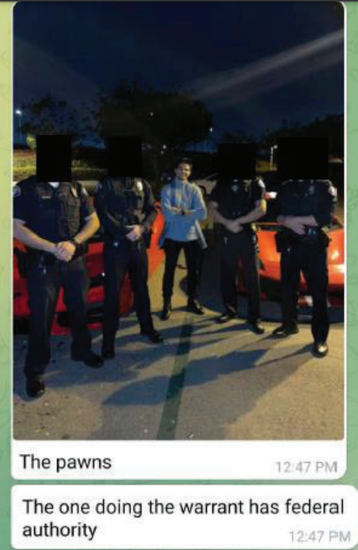

Lamborghini Carjackers Lured by $243M Cyberheist
October 9, 2024 by Brian Krebs
The parents of a 19-year-old Connecticut honors student accused of taking part in a $243 million cryptocurrency heist
in August were carjacked a week later — while out house-hunting in a brand new Lamborghini. Prosecutors say the couple was beaten
and briefly kidnapped by six young men who traveled from Florida as part of a botched plan to hold the parents for ransom.
Late in the afternoon of Aug. 25, 2024 in Danbury, Ct., a married couple in their 50s pulled up to a gated community in a new Lamborghini Urus
(investigators say the sports car still had temporary tags) when they were intentionally rear-ended by a Honda Civic. A witness told police
they saw three men exit a van that was following the Honda, and said the men began assaulting the couple and forcing them into the van.
Local police officers spotted the van speeding from the scene and pursued it, only to find the vehicle crashed and abandoned a short distance away.

Inside the disabled van the police found the couple with their hands and feet bound in duct tape, the man visibly bruised after being assaulted with a baseball bat.
Danbury police soon reported arresting six suspects in the kidnapping, all men aged 18-26 from Florida. They also recovered the abandoned Lamborghini from a wooded area.
A criminal complaint (PDF) filed on Sept. 24 against the six men does not name the victims, referring to them only as a married couple from Danbury with the initials R.C. and S.C.
But prosecutors in Connecticut said they were targeted “because the co-conspirators believed the victims’ son had access to significant amounts of digital currency.”
What made the Miami men so convinced R.C. and S.C.’s son was loaded with cryptocurrency? Approximately one week earlier, on Aug. 19, a group of cybercriminals
that allegedly included the couple’s son executed a sophisticated phone-based social engineering attack in which they stole $243 million worth of cryptocurrency
from a victim in Washington, D.C.
Crooked Cops, Stolen Laptops & the Ghost of UGNazi
September 30, 2024 by Brian Krebs
A California man accused of failing to pay taxes on tens of millions of dollars allegedly earned from cybercrime also paid local police officers
hundreds of thousands of dollars to help him extort, intimidate and silence rivals and former business partners, the government alleges.
KrebsOnSecurity has learned that many of the man’s alleged targets were members of UGNazi, a hacker group behind multiple high-profile breaches
and cyberattacks back in 2012. A federal complaint (PDF) filed last week said the Federal Bureau of Investigation (FBI) has been investigating
Los Angeles resident Adam Iza. Also known as “Assad Faiq” and “The Godfather,” Iza is the founder of a cryptocurrency investment platform called Zort
that advertised the ability to make smart trades based on artificial intelligence technology. But the feds say investors in Zort soon lost their shorts,
after Iza and his girlfriend began spending those investments on Lamborghinis, expensive jewelry, vacations, a $28 million home in Bel Air,
even cosmetic surgery to extend the length of his legs.

The complaint states the FBI started looking at Iza after receiving multiple reports that he had on his payroll several active deputies with the Los Angeles Sheriff’s Department (LASD).
Iza’s attorney did not immediately respond to requests for comment. The complaint cites a letter from an attorney for a victim referenced only as “E.Z.,”
who was seeking help related to an extortion and robbery allegedly committed by Iza. The government says that in March 2022, three men showed up at E.Z.’s home,
and tried to steal his laptop in an effort to gain access to E.Z. cryptocurrency holdings online. A police report referenced in the complaint says three intruders were
scared off when E.Z. fired several handgun rounds in the direction of his assailants. The FBI later obtained a copy of a search warrant executed by LASD deputies in January 2022
for GPS location information on a phone belonging to E.Z., which shows an LASD deputy unlawfully added E.Z.’s mobile number to a list of those associated with an unrelated
firearms investigation.